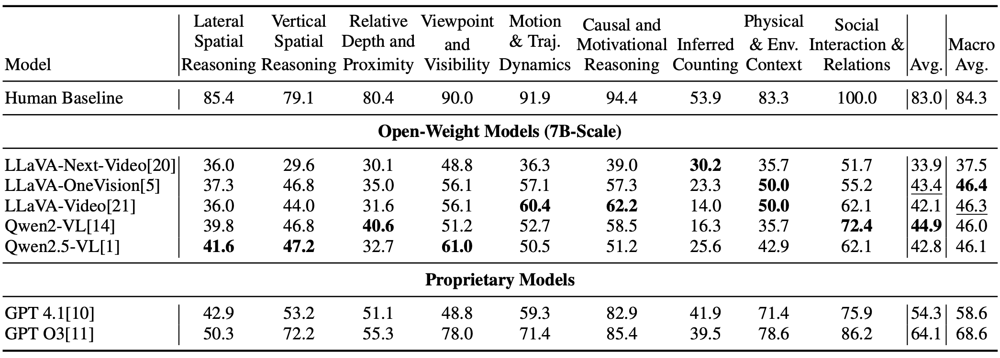
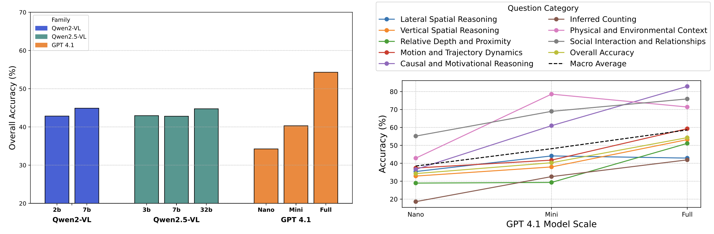

Video QA has made significant strides by leveraging multimodal learning to align visual and textual modalities. However, current benchmarks overwhelmingly focus on questions answerable through explicit visual content - actions, objects & events directly observable within individual frames or short clips. In contrast, creative and cinematic videos - such as movies, TV shows, and narrative-driven content - employ storytelling techniques that deliberately omit certain depictions, requiring viewers to infer motives, causality, and relationships across discontinuous frames. Humans naturally excel at such implicit reasoning, seamlessly integrating information across time and context to construct coherent narratives. Current VideoQA systems and benchmarks fail to capture this essential dimension of human-like understanding. To bridge this gap, we present ImplicitQA, a novel benchmark specifically designed to test models on implicit reasoning. It comprises 1K meticulously annotated QA pairs derived from 320+ high-quality creative video clips, systematically categorized into key reasoning dimensions: lateral and vertical spatial reasoning, depth and proximity, viewpoint and visibility, motion and trajectory, causal and motivational reasoning, social interactions, physical context, and inferred counting. These annotations are deliberately challenging, crafted by authors ensuring high-quality. Our extensive evaluations on leading VideoQA models reveals performance degradation, underscoring their reliance on surface-level visual cues and highlighting the difficulty of implicit reasoning. Performance variations across models further illustrate the complexity and diversity of the challenges presented by ImplicitQA. By releasing both the dataset and our data collection framework, we aim to stimulate further research and development in the community.
Table:
Comparison of ImplicitQA with existing VideoQA datasets. ImplicitQA uniquely focuses on implicit reasoning with visual content, annotated end-to-end by domain experts.
ImplicitQA has nine categories varying across 15 genres with live-action and animation media types.
Left: Distribution across categories. Middle: ImplicitQA statistics across primary genres for the top seven most frequent categories.Right: Distribution of Media Type.
Figure: We begin by selecting creative video clips and download them. An expert-annotator pool then uses our FrameQuiz Annotation Tool to (1) mark temporal segments, (2) add a multiple-choice question and its correct answer for the segment, and (3) craft plausible distractor options. These annotated clips form the raw ImplicitQA Dataset. Next, a non-expert annotator pool employs the ImplicitEval Annotation Tool to answer each question, yielding a human baseline accuracy score. We run GPT-4.1 on the dataset to automatically assign initial category tags, which are then relabeled by the expert annotators.
Results on ImplicitQA, best and second best results are highlighted.
Left: Overall performance vs Model Scale, Right: Category-wise performance vs Model Scale.
@article{swetha2025implicitqa,
title={ImplicitQA: Going beyond frames towards Implicit Video Reasoning},
author={Swetha, Sirnam and Gupta, Rohit and Kulkarni, Parth Parag and Shatwell, David G and Santiago, Jeffrey A Chan and Siddiqui, Nyle and Fioresi, Joseph and Shah, Mubarak},
journal={arXiv preprint arXiv:2506.21742},
year={2025}
}